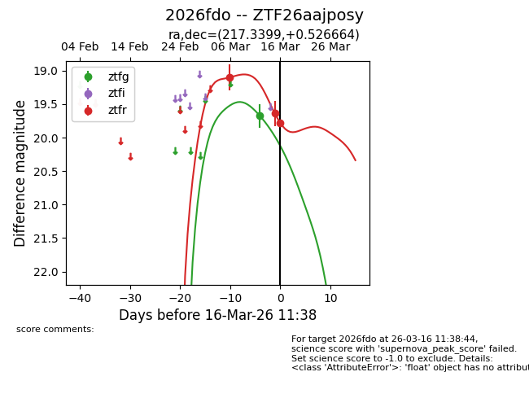
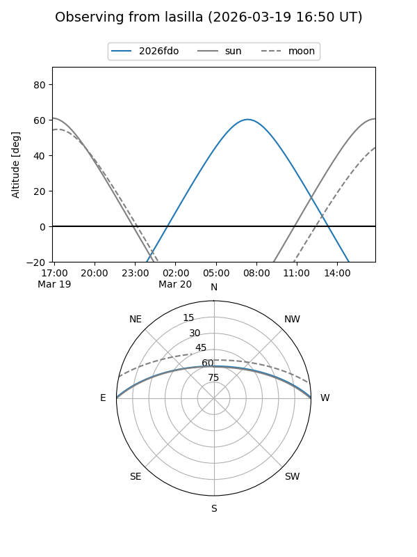
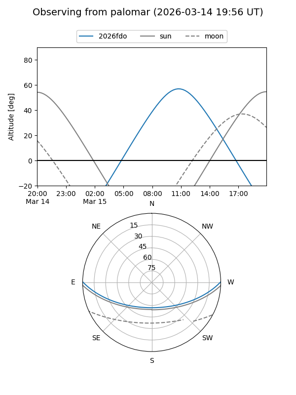
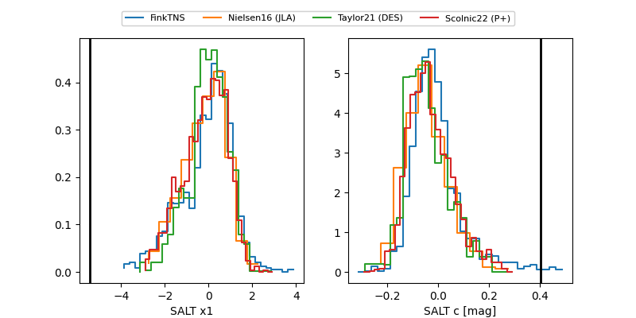

2026fdo
Target 2026fdo at 2026-03-16 11:40
Aliases and brokers:
FINK: link
Lasair: link
ALeRCE: link
TNS: link
YSE: link
alt names
ZTF26aajposy (ztf,fink_ztf)
2026fdo (tns,yse)
Coordinates:
equatorial (ra, dec) = 217.3399,+0.52666
equatorial (HMS+DMS) = 14:29:21.56,+00:31:35.99
galactic (l, b) = (348.4601,+54.50224)
Flags:
Photometry:
last ztfg=19.67, ztfr=19.78
1 ztfg, 3 ztfr detections
Lightcurve

Visibility


Additional plots
